| x |
|---|
| 55 |
| 23 |
The Rise in Consumer Debt
Statement of Purpose
The purpose of this project is to predict and explain the rise in consumer debt over the past 20 years. The goal is to not only understand the underlying trends, but also to analyze the macroeconomic and political factors driving the rise in consumer debt. Understanding the main contributing factors responsible for rising consumer debt can help us better address this problem and to help lower the total debt or at least slow the rate at which it is accumulated.
Executive Summary
From the models I tested, the multiple linear regression model with predictors from best subset selection is the best-performing model in predicting total consumer debt, having the lowest prediction error, with a CV-RMSE of 0.410, compared to the Random Forest model with all predictors, a CV-RMSE of 0.709, and for the Single Linear Regression model, a CV-RMSE of 0.737. This suggests that a combination of economic and political factors have better predicting power than single predictors or more complex models than the random forest model.
Introduction
The data set contains 55 observations and 23 variables. The variable we aim to explain is total, which represents the total amount of consumer debt represented in trillions of dollars.
Please note that the is_recession variable is represented as 0’s and 1’s, where 0 represents no recession, and 1 represents a recession. A recession is defined as two consecutive quarters of negative GDP growth, a decline in consumer spending, a decline in consumer sentiment, and a rise in unemployment.
For the variables, pres_party, house_party, and senate_party, 0 represents Republican control and 1 represents Democrat control. Fiscal policy and government spending is influenced by political party control, which can influence consumer spending habits.
Exploratory Data Analysis
Below is an overview of the data set.
Number of Observations and Features: The data set here is relatively small, since it covers total consumer debt from 01-01-2003 to 10-01-2025. Of the 23 variables here, 14 will be used as potential predictors while the other 8 will be used for supplemental purposes in exploring the data. The remaining variable is the total consumer debt, our quantitative value we aim to predict.
First Six Rows of the Data Set: As you can see from the first six rows of the data set the dates are out of order. It is kept this way for training purposes, but as you’ll see below I organize it for graphing purposes.
| year_quarter | mortgage | he_revolving | auto_loan | credit_card | student_loan | other | total | date | consumer_sentiment | unemployment_rate | cpi_index_avg | personal_savings_rate | cc_interest_rate | is_recession | pres_party | house_party | senate_party | hiring_rate | job_turnover_rate | eff_fed_funds_rate | mortgage_rate | auto_loan_rate |
|---|---|---|---|---|---|---|---|---|---|---|---|---|---|---|---|---|---|---|---|---|---|---|
| 22:Q1 | 11.18 | 0.317 | 1.469 | 0.841 | 1.59 | 0.445 | 15.842 | 2022-01-01 | 63.13333 | 3.866667 | 284.9057 | 3.833333 | 14.54333 | 0 | 1 | 1 | 1 | 4.400000 | 372.6667 | 0.1214444 | 4.872091 | 4.520152 |
| 19:Q3 | 9.44 | 0.400 | 1.320 | 0.880 | 1.50 | 0.430 | 13.950 | 2019-07-01 | 93.80000 | 3.600000 | 256.0893 | 6.900000 | 15.11000 | 0 | 0 | 1 | 0 | 3.900000 | 333.0000 | 2.1921739 | 3.949880 | 5.316466 |
| 11:Q2 | 8.52 | 0.620 | 0.710 | 0.690 | 0.85 | 0.330 | 11.730 | 2011-04-01 | 71.86667 | 9.066667 | 224.5683 | 6.366667 | 13.07333 | 0 | 1 | 0 | 1 | 3.266667 | 315.0000 | 0.0946154 | 4.447852 | 5.696420 |
| 08:Q4 | 9.26 | 0.710 | 0.790 | 0.870 | 0.64 | 0.410 | 12.670 | 2008-10-01 | 57.66667 | 6.866667 | 213.8487 | 5.566667 | 12.00000 | 1 | 0 | 1 | 1 | 3.166667 | 349.6667 | 0.5053261 | 5.603188 | 6.288646 |
| 18:Q1 | 8.94 | 0.440 | 1.230 | 0.820 | 1.41 | 0.390 | 13.210 | 2018-01-01 | 98.93333 | 4.033333 | 249.3217 | 5.800000 | 13.47333 | 0 | 0 | 0 | 0 | 3.766667 | 348.3333 | 1.4470000 | 4.424333 | 4.807222 |
| 10:Q4 | 8.45 | 0.670 | 0.710 | 0.730 | 0.81 | 0.340 | 11.710 | 2010-10-01 | 71.26667 | 9.500000 | 219.6990 | 5.966667 | 13.49000 | 0 | 1 | 1 | 1 | 3.233333 | 312.0000 | 0.1895652 | 4.694052 | 6.206753 |
Basic Structure of the Data Set: The majority of the variables here are numerical, along with a date, character, and a few variables that have been converted into factors. Here I check to see if the data is appropriately represented. The year_quarter can stay as a character type as I use the date variable for graphing purposes. I keep it as a reference point only.
'data.frame': 55 obs. of 23 variables:
$ year_quarter : chr "22:Q1" "19:Q3" "11:Q2" "08:Q4" ...
$ mortgage : num 11.18 9.44 8.52 9.26 8.94 ...
$ he_revolving : num 0.317 0.4 0.62 0.71 0.44 0.67 0.57 0.54 0.319 0.396 ...
$ auto_loan : num 1.47 1.32 0.71 0.79 1.23 ...
$ credit_card : num 0.841 0.88 0.69 0.87 0.82 ...
$ student_loan : num 1.59 1.5 0.85 0.64 1.41 ...
$ other : num 0.445 0.43 0.33 0.41 0.39 0.34 0.31 0.3 0.47 0.554 ...
$ total : num 15.8 13.9 11.7 12.7 13.2 ...
$ date : Date, format: "2022-01-01" "2019-07-01" ...
$ consumer_sentiment : num 63.1 93.8 71.9 57.7 98.9 ...
$ unemployment_rate : num 3.87 3.6 9.07 6.87 4.03 ...
$ cpi_index_avg : num 285 256 225 214 249 ...
$ personal_savings_rate: num 3.83 6.9 6.37 5.57 5.8 ...
$ cc_interest_rate : num 14.5 15.1 13.1 12 13.5 ...
$ is_recession : Factor w/ 2 levels "0","1": 1 1 1 2 1 1 1 1 1 1 ...
$ pres_party : Factor w/ 2 levels "0","1": 2 1 2 1 1 2 2 2 2 2 ...
$ house_party : Factor w/ 2 levels "0","1": 2 2 1 2 1 2 1 1 2 1 ...
$ senate_party : Factor w/ 2 levels "0","1": 2 1 2 2 1 2 2 2 2 2 ...
$ hiring_rate : num 4.4 3.9 3.27 3.17 3.77 ...
$ job_turnover_rate : num 373 333 315 350 348 ...
$ eff_fed_funds_rate : num 0.1214 2.1922 0.0946 0.5053 1.447 ...
$ mortgage_rate : num 4.87 3.95 4.45 5.6 4.42 ...
$ auto_loan_rate : num 4.52 5.32 5.7 6.29 4.81 ...Names of the Features used in the Data Set: Most of the variable names here are self explanatory, but I’ll give a basic explanation of some of the financial terms you may not be familiar with. HE (Home Equity) revolving debt is where you borrow against your home and use it to pay for goods and services. It is a secured type of debt that uses your home as collateral. The average CPI (Consumer Price Index) is used to track the average changes in cost of living. The effective federal funds rate is the baseline interest rate for borrowing costs set by the Federal Reserve.
| x |
|---|
| year_quarter |
| mortgage |
| he_revolving |
| auto_loan |
| credit_card |
| student_loan |
| other |
| total |
| date |
| consumer_sentiment |
| unemployment_rate |
| cpi_index_avg |
| personal_savings_rate |
| cc_interest_rate |
| is_recession |
| pres_party |
| house_party |
| senate_party |
| hiring_rate |
| job_turnover_rate |
| eff_fed_funds_rate |
| mortgage_rate |
| auto_loan_rate |
Last Six Rows of the Data Set: This is just the tail end of the data set, a quick check to see if the end of the data set has any issues, which as you can see, it does not.
| year_quarter | mortgage | he_revolving | auto_loan | credit_card | student_loan | other | total | date | consumer_sentiment | unemployment_rate | cpi_index_avg | personal_savings_rate | cc_interest_rate | is_recession | pres_party | house_party | senate_party | hiring_rate | job_turnover_rate | eff_fed_funds_rate | mortgage_rate | auto_loan_rate | |
|---|---|---|---|---|---|---|---|---|---|---|---|---|---|---|---|---|---|---|---|---|---|---|---|
| 50 | 14:Q1 | 8.17 | 0.530 | 0.880 | 0.660 | 1.110 | 0.310 | 11.650 | 2014-01-01 | 80.93333 | 6.666667 | 235.6210 | 5.233333 | 11.83667 | 0 | 1 | 0 | 1 | 3.433333 | 352.3333 | 0.0722222 | 4.165143 | 4.291905 |
| 51 | 18:Q3 | 9.14 | 0.420 | 1.270 | 0.840 | 1.440 | 0.400 | 13.510 | 2018-07-01 | 98.06667 | 3.766667 | 251.6863 | 6.633333 | 14.30000 | 0 | 0 | 0 | 0 | 3.833333 | 333.6667 | 1.9261957 | 4.568092 | 5.046819 |
| 52 | 12:Q4 | 8.03 | 0.560 | 0.780 | 0.680 | 0.970 | 0.320 | 11.340 | 2012-10-01 | 79.40000 | 7.800000 | 231.3693 | 9.133333 | 11.90333 | 0 | 1 | 0 | 1 | 3.300000 | 350.0000 | 0.1611957 | 3.666207 | 4.910344 |
| 53 | 23:Q3 | 12.14 | 0.349 | 1.595 | 1.079 | 1.599 | 0.529 | 17.291 | 2023-07-01 | 69.56667 | 3.633333 | 305.9890 | 5.466667 | 21.07333 | 0 | 1 | 0 | 1 | 3.666667 | 341.6667 | 5.2592391 | 6.880877 | 7.918129 |
| 54 | 19:Q2 | 9.41 | 0.400 | 1.300 | 0.870 | 1.480 | 0.410 | 13.860 | 2019-04-01 | 98.46667 | 3.633333 | 255.2473 | 7.333333 | 15.11667 | 0 | 0 | 1 | 0 | 3.866667 | 314.0000 | 2.3973626 | 4.011436 | 5.419060 |
| 55 | 16:Q3 | 8.35 | 0.470 | 1.140 | 0.750 | 1.280 | 0.370 | 12.350 | 2016-07-01 | 90.33333 | 4.900000 | 240.6073 | 5.100000 | 12.39333 | 0 | 1 | 0 | 0 | 3.733333 | 344.6667 | 0.3948913 | 3.650555 | 4.150925 |
Summary of the Data Set: This is a nice overview of the numerical values in the data set. The total consumer debt covers a wide range, from 7.38 to 18.78 trillion dollars, a massive figure. You can see the mortgage debt makes up a large portion of that amount, ranging from 5.08 to 13.17 trillion. For interest rates, the effective federal funds rate is relatively small when compared to the other interest rates, but increases from 0.07% to 5.26%, a nearly 75 times increase. This is massive when compared to the other interest rates included in my data set, where mortgage, auto loan, and credit card interest rates roughly double in size. It is worth noting that credit cards have the highest interest rates of 21.68%. Credit card debt has a max of 1.28 trillion dollars of the total consumer debt, a small figure comparatively, but the higher interest rate makes it difficult to pay off for the average consumer because of its compounding power.
| year_quarter | mortgage | he_revolving | auto_loan | credit_card | student_loan | other | total | date | consumer_sentiment | unemployment_rate | cpi_index_avg | personal_savings_rate | cc_interest_rate | is_recession | pres_party | house_party | senate_party | hiring_rate | job_turnover_rate | eff_fed_funds_rate | mortgage_rate | auto_loan_rate | |
|---|---|---|---|---|---|---|---|---|---|---|---|---|---|---|---|---|---|---|---|---|---|---|---|
| Length:55 | Min. : 5.080 | Min. :0.2600 | Min. :0.620 | Min. :0.6600 | Min. :0.240 | Min. :0.3000 | Min. : 7.38 | Min. :2003-04-01 | Min. :52.50 | Min. :3.533 | Min. :183.1 | Min. : 1.800 | Min. :11.83 | 0:51 | 0:24 | 0:36 | 0:21 | Min. :2.867 | Min. :267.7 | Min. :0.07222 | Min. :2.960 | Min. :4.149 | |
| Class :character | 1st Qu.: 8.110 | 1st Qu.:0.4010 | 1st Qu.:0.745 | 1st Qu.:0.7000 | 1st Qu.:0.660 | 1st Qu.:0.3400 | 1st Qu.:11.47 | 1st Qu.:2008-12-31 | 1st Qu.:71.57 | 1st Qu.:4.167 | 1st Qu.:213.7 | 1st Qu.: 4.567 | 1st Qu.:12.37 | 1: 4 | 1:31 | 1:19 | 1:34 | 1st Qu.:3.300 | 1st Qu.:324.3 | 1st Qu.:0.12975 | 1st Qu.:3.987 | 1st Qu.:4.825 | |
| Mode :character | Median : 8.700 | Median :0.5000 | Median :0.820 | Median :0.7600 | Median :0.990 | Median :0.4000 | Median :12.13 | Median :2013-01-01 | Median :77.50 | Median :5.000 | Median :232.0 | Median : 5.500 | Median :13.20 | NA | NA | NA | NA | Median :3.667 | Median :336.3 | Median :0.76681 | Median :4.656 | Median :5.691 | |
| NA | Mean : 8.912 | Mean :0.5007 | Mean :1.020 | Mean :0.8041 | Mean :1.025 | Mean :0.4012 | Mean :12.66 | Mean :2013-12-04 | Mean :80.10 | Mean :5.914 | Mean :238.4 | Mean : 5.555 | Mean :14.02 | NA | NA | NA | NA | Mean :3.633 | Mean :336.6 | Mean :1.66769 | Mean :4.917 | Mean :5.933 | |
| NA | 3rd Qu.: 9.250 | 3rd Qu.:0.6150 | 3rd Qu.:1.275 | 3rd Qu.:0.8405 | 3rd Qu.:1.470 | 3rd Qu.:0.4215 | 3rd Qu.:13.61 | 3rd Qu.:2018-11-16 | 3rd Qu.:92.63 | 3rd Qu.:7.767 | 3rd Qu.:253.0 | 3rd Qu.: 6.617 | 3rd Qu.:14.53 | NA | NA | NA | NA | 3rd Qu.:3.867 | 3rd Qu.:350.0 | 3rd Qu.:2.79160 | 3rd Qu.:5.982 | 3rd Qu.:7.092 | |
| NA | Max. :13.170 | Max. :0.7100 | Max. :1.670 | Max. :1.2800 | Max. :1.660 | Max. :0.5600 | Max. :18.78 | Max. :2025-10-01 | Max. :98.93 | Max. :9.933 | Max. :325.5 | Max. :15.033 | Max. :21.68 | NA | NA | NA | NA | Max. :4.533 | Max. :423.3 | Max. :5.26478 | Max. :6.881 | Max. :8.261 |
Checks for values of variables and any missing observations: There are no missing observations here, and so the data set is complete. This is a more in depth summary of the data set, so feel free to review it.
| skim_type | skim_variable | n_missing | complete_rate | Date.min | Date.max | Date.median | Date.n_unique | character.min | character.max | character.empty | character.n_unique | character.whitespace | factor.ordered | factor.n_unique | factor.top_counts | numeric.mean | numeric.sd | numeric.p0 | numeric.p25 | numeric.p50 | numeric.p75 | numeric.p100 | numeric.hist |
|---|---|---|---|---|---|---|---|---|---|---|---|---|---|---|---|---|---|---|---|---|---|---|---|
| Date | date | 0 | 1 | 2003-04-01 | 2025-10-01 | 2013-01-01 | 55 | NA | NA | NA | NA | NA | NA | NA | NA | NA | NA | NA | NA | NA | NA | NA | NA |
| character | year_quarter | 0 | 1 | NA | NA | NA | NA | 5 | 5 | 0 | 55 | 0 | NA | NA | NA | NA | NA | NA | NA | NA | NA | NA | NA |
| factor | is_recession | 0 | 1 | NA | NA | NA | NA | NA | NA | NA | NA | NA | FALSE | 2 | 0: 51, 1: 4 | NA | NA | NA | NA | NA | NA | NA | NA |
| factor | pres_party | 0 | 1 | NA | NA | NA | NA | NA | NA | NA | NA | NA | FALSE | 2 | 1: 31, 0: 24 | NA | NA | NA | NA | NA | NA | NA | NA |
| factor | house_party | 0 | 1 | NA | NA | NA | NA | NA | NA | NA | NA | NA | FALSE | 2 | 0: 36, 1: 19 | NA | NA | NA | NA | NA | NA | NA | NA |
| factor | senate_party | 0 | 1 | NA | NA | NA | NA | NA | NA | NA | NA | NA | FALSE | 2 | 1: 34, 0: 21 | NA | NA | NA | NA | NA | NA | NA | NA |
| numeric | mortgage | 0 | 1 | NA | NA | NA | NA | NA | NA | NA | NA | NA | NA | NA | NA | 8.9118182 | 1.7784472 | 5.0800000 | 8.1100000 | 8.7000000 | 9.250000 | 13.170000 | ▂▅▇▁▂ |
| numeric | he_revolving | 0 | 1 | NA | NA | NA | NA | NA | NA | NA | NA | NA | NA | NA | NA | 0.5006727 | 0.1280749 | 0.2600000 | 0.4010000 | 0.5000000 | 0.615000 | 0.710000 | ▆▇▆▇▇ |
| numeric | auto_loan | 0 | 1 | NA | NA | NA | NA | NA | NA | NA | NA | NA | NA | NA | NA | 1.0203636 | 0.3306656 | 0.6200000 | 0.7450000 | 0.8200000 | 1.275000 | 1.670000 | ▇▁▂▂▂ |
| numeric | credit_card | 0 | 1 | NA | NA | NA | NA | NA | NA | NA | NA | NA | NA | NA | NA | 0.8041273 | 0.1448990 | 0.6600000 | 0.7000000 | 0.7600000 | 0.840500 | 1.280000 | ▇▆▁▁▁ |
| numeric | student_loan | 0 | 1 | NA | NA | NA | NA | NA | NA | NA | NA | NA | NA | NA | NA | 1.0252545 | 0.4538163 | 0.2400000 | 0.6600000 | 0.9900000 | 1.470000 | 1.660000 | ▅▃▅▃▇ |
| numeric | other | 0 | 1 | NA | NA | NA | NA | NA | NA | NA | NA | NA | NA | NA | NA | 0.4011636 | 0.0687574 | 0.3000000 | 0.3400000 | 0.4000000 | 0.421500 | 0.560000 | ▇▅▇▁▂ |
| numeric | total | 0 | 1 | NA | NA | NA | NA | NA | NA | NA | NA | NA | NA | NA | NA | 12.6611091 | 2.5669611 | 7.3800000 | 11.4700000 | 12.1300000 | 13.605000 | 18.780000 | ▂▇▇▂▂ |
| numeric | consumer_sentiment | 0 | 1 | NA | NA | NA | NA | NA | NA | NA | NA | NA | NA | NA | NA | 80.0957576 | 12.6718785 | 52.5000000 | 71.5666667 | 77.5000000 | 92.633333 | 98.933333 | ▂▅▇▅▇ |
| numeric | unemployment_rate | 0 | 1 | NA | NA | NA | NA | NA | NA | NA | NA | NA | NA | NA | NA | 5.9142424 | 2.0512227 | 3.5333333 | 4.1666667 | 5.0000000 | 7.766667 | 9.933333 | ▇▃▂▂▃ |
| numeric | cpi_index_avg | 0 | 1 | NA | NA | NA | NA | NA | NA | NA | NA | NA | NA | NA | NA | 238.3928121 | 36.3159729 | 183.0666667 | 213.6778333 | 232.0450000 | 253.048333 | 325.547000 | ▅▇▅▂▂ |
| numeric | personal_savings_rate | 0 | 1 | NA | NA | NA | NA | NA | NA | NA | NA | NA | NA | NA | NA | 5.5551515 | 2.1241335 | 1.8000000 | 4.5666667 | 5.5000000 | 6.616667 | 15.033333 | ▂▇▂▁▁ |
| numeric | cc_interest_rate | 0 | 1 | NA | NA | NA | NA | NA | NA | NA | NA | NA | NA | NA | NA | 14.0168485 | 2.7304713 | 11.8300000 | 12.3733333 | 13.2033333 | 14.531667 | 21.676667 | ▇▃▁▁▁ |
| numeric | hiring_rate | 0 | 1 | NA | NA | NA | NA | NA | NA | NA | NA | NA | NA | NA | NA | 3.6333333 | 0.3727332 | 2.8666667 | 3.3000000 | 3.6666667 | 3.866667 | 4.533333 | ▂▇▇▃▂ |
| numeric | job_turnover_rate | 0 | 1 | NA | NA | NA | NA | NA | NA | NA | NA | NA | NA | NA | NA | 336.6484848 | 28.4750572 | 267.6666667 | 324.3333333 | 336.3333333 | 350.000000 | 423.333333 | ▂▅▇▂▁ |
| numeric | eff_fed_funds_rate | 0 | 1 | NA | NA | NA | NA | NA | NA | NA | NA | NA | NA | NA | NA | 1.6676954 | 1.8702481 | 0.0722222 | 0.1297466 | 0.7668132 | 2.791603 | 5.264783 | ▇▂▁▁▂ |
| numeric | mortgage_rate | 0 | 1 | NA | NA | NA | NA | NA | NA | NA | NA | NA | NA | NA | NA | 4.9174948 | 1.1498557 | 2.9602429 | 3.9866547 | 4.6562656 | 5.982376 | 6.880877 | ▅▇▅▃▆ |
| numeric | auto_loan_rate | 0 | 1 | NA | NA | NA | NA | NA | NA | NA | NA | NA | NA | NA | NA | 5.9327944 | 1.3422187 | 4.1488668 | 4.8250290 | 5.6909053 | 7.091740 | 8.260802 | ▇▃▂▃▅ |
The data follows a positive linear trend, so I only include the minimum, maximum, and median values. The values are represented in trillions of dollars.
| Metric | Value |
|---|---|
| min_debt | 7.38 |
| max_debt | 18.78 |
| median_debt | 12.13 |
Here is a better representation of consumer debt over time. This shows the rate of change for total consumer debt on a quarterly basis. The growth over time stays relatively consistent where the max surge is likely caused by periods of financial stress, such as the recessions in 2008 and 2020.
| Metric | Value |
|---|---|
| avg_growth | 1.777309 |
| max_surge | 9.656085 |
| volatility | 2.623052 |
Here we can see the rise in total consumer debt over time. We can see a decline after the 2008 housing market crash, which would be the result in delinquencies following that crisis. After that, there is a steady rise in consumer debt following the event, and sharper rise following 2020, a result of the events that took place during COVID-19. What’s interesting is that there is a sharp rise in debt before the housing market crash in 2008, which closely resembles the sharp rise in debt following COVID-19 in 2020. Whether this implies an upcoming recession is up for debate, but it is worth noting considering recent events. I go into further detail below in my EDA, as well as in my conclusion.
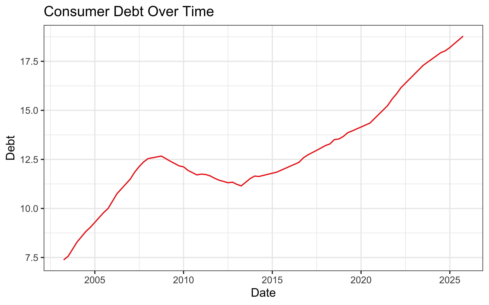
Below we can see consumer debt broken down into their individual categories. Mortgage debt is significantly larger than any other category, which isn’t surprising considering recent home valuations. Following mortgage debt, we have auto and student loans as well as credit card debt, which over the past 3-4 years has been growing at a faster pace. This would be a result of the increase in the effective federal funds rate and rise in inflation, which is discussed further below.
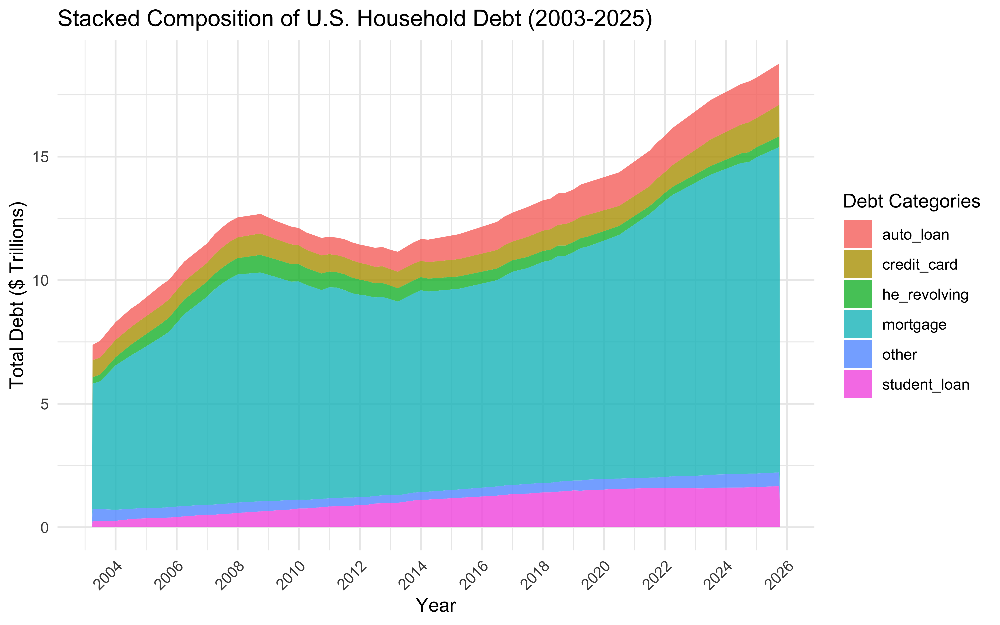
This gives us a closer look of auto and student loans along with credit card debt. A mix of high interest rates, high costs for vehicles, and longer loan times has contributed to the rise in auto loans. Inflation has lead to an increasing reliance on credit card use and high interest rates have made it difficult to pay off their balances. Payments for student loans were paused during COVID-19 and resumed around 2023. Many are struggling to pay off their student loans due to a lack of job opportunities in a slowing job market.
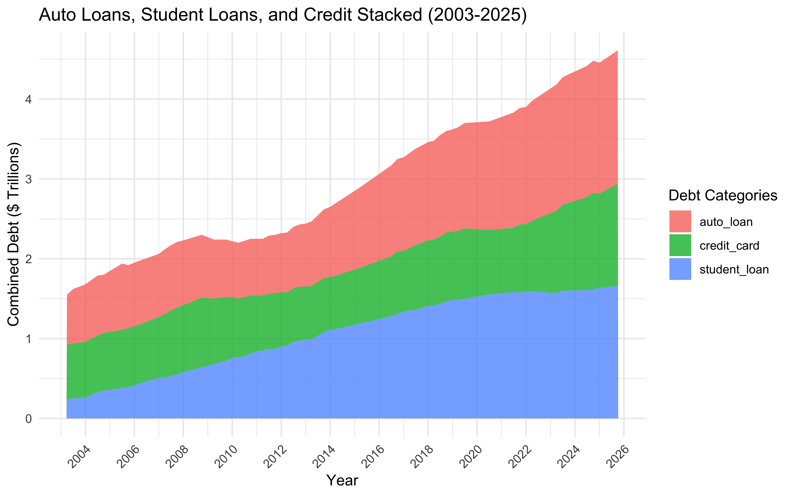
Here we can see a comparison of interest rates over time. The effective federal funds rate is the baseline of all borrowing costs and therefore, auto and student loans, mortgage rates and credit card interest rates are highly correlated. It’s a little redundant using the different interest rates as predictors of consumer debt over time, but it’s worth noting the variations in rates over time. Student loan interest rates are not included as they are legally tied to the federal funds rate. The effective federal funds rate tends to rise faster than the other three. Consumer borrowing interest rates stay low due to competition, but still rise over time, though not as dramatically.
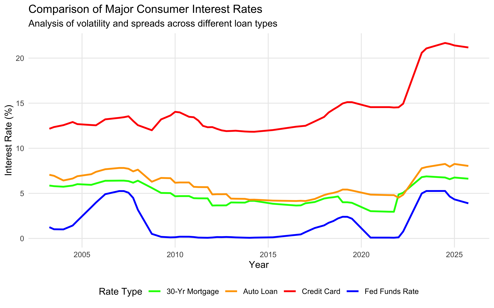
Here we look at the total consumer debt and the growth rate in consumer debt in relation to whether or not the economy is expanding or contracting. We can see higher debt levels during times of economic expansion, which makes sense as consumers typically spend more during times of growth when compared to times of economic contraction and uncertainty. It’s worth noting that data points during a recession are far fewer when compared to data points I have during times of economic expansion. That being said, it’s a nice graphical representation of debt expanding and contracting as shown below. We can see debt in its expansion phase has an upward trend, with far more outliers on the high side.
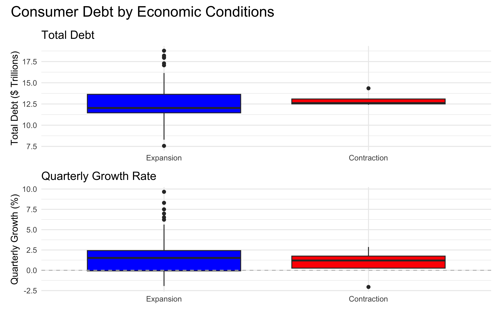
Below we can see a representation of consumer debt under Democrat and Republican control. It appears that the overall debt is higher under Democrat control. Under Republican control, you can see that the average debt is slightly lower for House control, but higher for Presidential and Senate control. Since the data for total consumer debt is a linear upward trend it will naturally have higher debt levels for the most recent party. A better representation would be to show the growth rate of debt over time under political control, which you can find below. I wanted to include this to see how debt is affected by political parties.
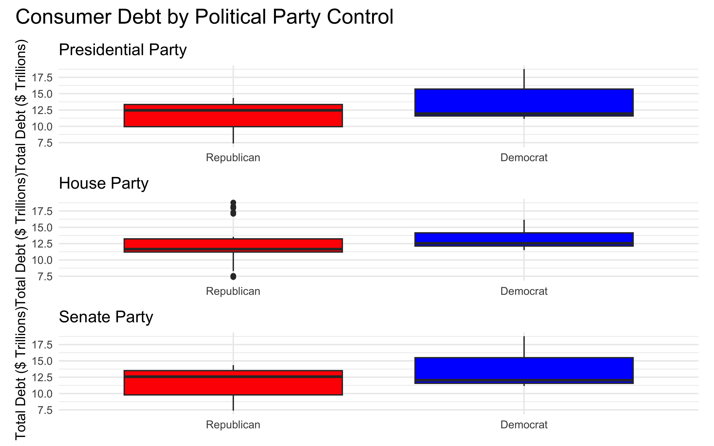
This gives us a better idea of the growth rate in debt under each party. It would appear that growth in consumer debt tends to rise faster under Republican control when compared to Democrat control. The growth in debt by political party can be influenced by a number of factors, such as fiscal policy or world events. Overall, both parties show growth in total consumer debt and the differences are minimal.
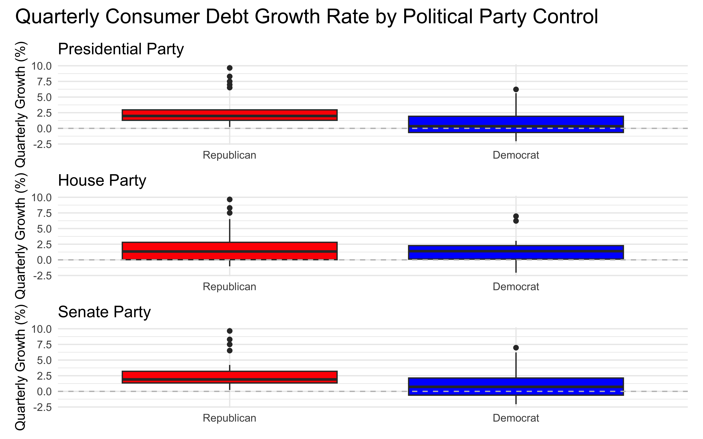
Here I have some side by side comparisons of the hiring rate, job turn over rate, average CPI, personal savings rate and total consumer debt. You can see that total consumer debt and average CPI have a strong correlation here, which makes sense; as the price of goods and services increase, so does the total debt. Unemployment rate seems to be on a slight upward trend as of recently, but still remains relatively low compared to prior years. It seems that personal savings rate, job turnover rate, and hiring rate have a high correlation as well, which could be explained by the hiring spree in 2020 as well as COVID-19 relief aid given out at that time. Looking at the charts here, there is a decline in those areas I mentioned during times of economic contraction. We are seeing that trend again in recent years, suggesting an upcoming economic contraction. You can see some stability in total debt, personal savings rate and job turnover rate between 2010 and 2018. Hiring rate remained on an upward trend from 2010 until roughly 2022, which is now in a sharp decline.
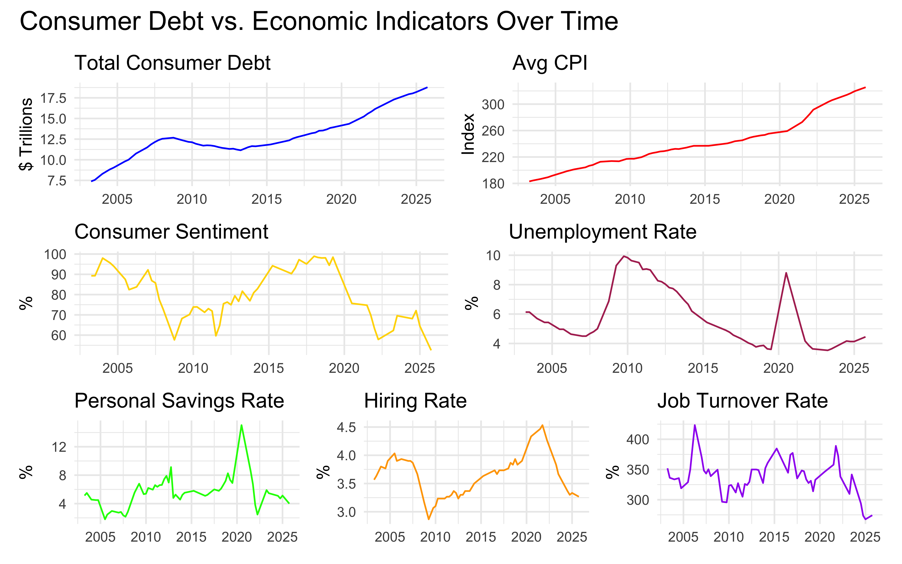
Model Selection Process
I decided to run best subset first to find the best combination of predictors for my model. We can see that the predictors on line 7 are the best combination here: unemployment_rate, cpi_index_avg, personal_savings_rate, is_recession, house_party, mortgage rate, and effective federal funds rate. I’m surprised the credit card interest rate didn’t make the cut here, though it is tied to the effective federal funds (EFF) rate, so using it may be redundant. That being said, mortgage rate is being included, indicating that even if it is tied to the EFF rate, the fact that mortgage debt makes up a very large portion of consumer debt, it is a significant predictor for total consumer debt. What’s more surprising is that house party seemed to be an important predictor in total consumer debt, while the senate and presidential party are not. This is most likely because the House house the power of initiating spending bills, which may have impact on consumer spending.
consumer_sentiment unemployment_rate cc_interest_rate cpi_index_avg
1 ( 1 ) " " " " " " "*"
2 ( 1 ) " " " " " " "*"
3 ( 1 ) " " " " " " "*"
4 ( 1 ) " " " " " " "*"
5 ( 1 ) " " " " " " "*"
6 ( 1 ) " " "*" " " "*"
7 ( 1 ) " " "*" " " "*"
8 ( 1 ) " " "*" " " "*"
9 ( 1 ) " " "*" " " "*"
10 ( 1 ) " " "*" " " "*"
11 ( 1 ) " " "*" " " "*"
12 ( 1 ) " " "*" "*" "*"
13 ( 1 ) " " "*" "*" "*"
14 ( 1 ) "*" "*" "*" "*"
personal_savings_rate is_recession1 pres_party1 house_party1
1 ( 1 ) " " " " " " " "
2 ( 1 ) " " " " " " "*"
3 ( 1 ) " " " " " " "*"
4 ( 1 ) " " "*" " " "*"
5 ( 1 ) " " "*" " " "*"
6 ( 1 ) "*" "*" " " "*"
7 ( 1 ) "*" "*" " " "*"
8 ( 1 ) "*" "*" "*" "*"
9 ( 1 ) "*" "*" "*" "*"
10 ( 1 ) "*" "*" "*" "*"
11 ( 1 ) "*" "*" "*" "*"
12 ( 1 ) "*" "*" "*" "*"
13 ( 1 ) "*" "*" "*" "*"
14 ( 1 ) "*" "*" "*" "*"
senate_party1 hiring_rate job_turnover_rate mortgage_rate
1 ( 1 ) " " " " " " " "
2 ( 1 ) " " " " " " " "
3 ( 1 ) " " " " " " " "
4 ( 1 ) " " " " " " " "
5 ( 1 ) " " "*" " " " "
6 ( 1 ) " " " " " " " "
7 ( 1 ) " " " " " " "*"
8 ( 1 ) " " " " " " "*"
9 ( 1 ) " " "*" " " "*"
10 ( 1 ) " " "*" "*" "*"
11 ( 1 ) " " "*" "*" "*"
12 ( 1 ) " " "*" "*" "*"
13 ( 1 ) "*" "*" "*" "*"
14 ( 1 ) "*" "*" "*" "*"
eff_fed_funds_rate auto_loan_rate
1 ( 1 ) " " " "
2 ( 1 ) " " " "
3 ( 1 ) " " "*"
4 ( 1 ) "*" " "
5 ( 1 ) "*" " "
6 ( 1 ) "*" " "
7 ( 1 ) "*" " "
8 ( 1 ) "*" " "
9 ( 1 ) "*" " "
10 ( 1 ) "*" " "
11 ( 1 ) "*" "*"
12 ( 1 ) "*" "*"
13 ( 1 ) "*" "*"
14 ( 1 ) "*" "*" [1] 7This is a visual representation of the best subset, where the top line shows which predictors carry the most weight in predicting total consumer debt. Note that the black boxes indicate useful predictors and white boxes indicate those that are not.
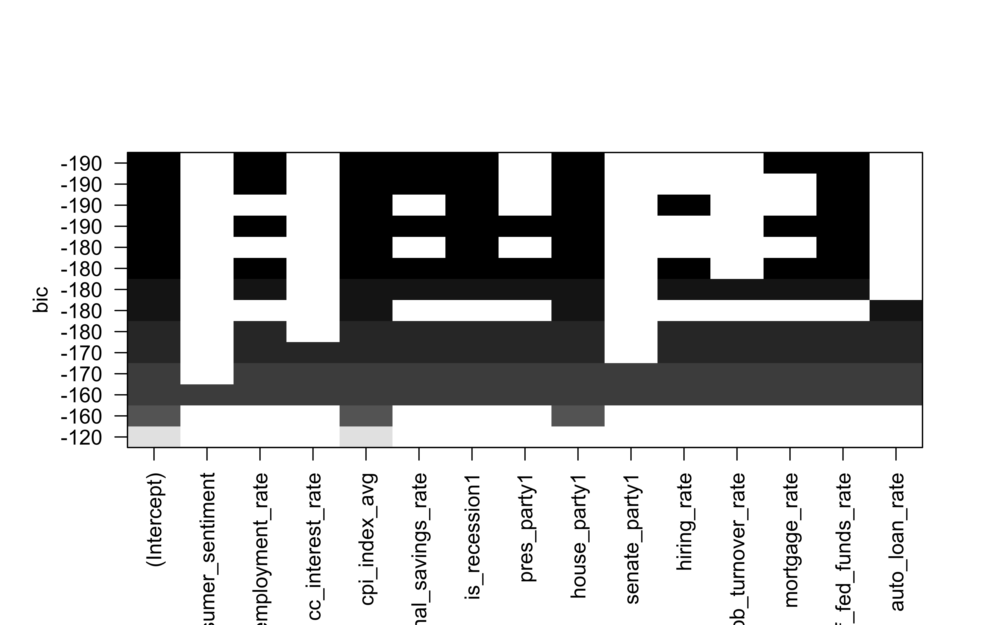
Having used the best subset selection it is worth noting that the data set I have is fairly small, with only 23 variables and 55 observations, so the risk of overfitting is high. Using LASSO (Least Absolute Shrinkage and Selection Operator) we can identify and drop predictors that don’t add any value to my model. We can see that a model with 7 predictors has the best predictive power without an overly complex model. For clarification LASSO works by adding a penalty to the model for each predictor included. It acts as a budget for the model, limiting the amount ‘spent’ on predictors, forcing the least useful ones out by forcing its coefficient down to zero. This helps clear out the ‘noise’ from our data set, making sure only the useful predictors stay. Before the penalty is applied, the predictors are standardized, so predictors on different scales are treated fairly. We use cv.glmnet() for this, where standardize argument is set to TRUE by default.
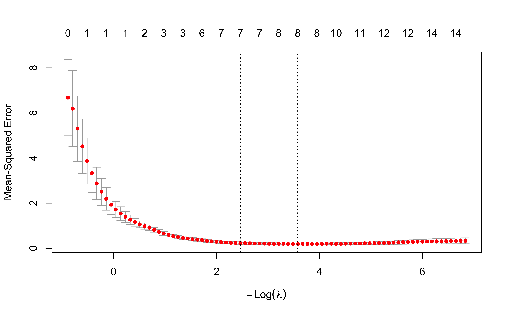
We can see that the LASSO method dropped unemployment rate, credit card interest rate, job turnover rate, mortgage rate, presidential party, and auto loan as predictors. Comparing the two models, there is a difference in the selection of predictors. In the LASSO method, unemployment and mortgage rate are dropped, but keeps consumer sentiment, senate party and hiring rate. Best Subset keeps unemployment rate and mortgage rate, but drops senate party, consumer sentiment and hiring rate as predictors. Both methods agree on average CPI, effective federal funds rate, personal savings rate, recession, and house party as predictors.
15 x 1 sparse Matrix of class "dgCMatrix"
lambda.min
(Intercept) -2.560106452
consumer_sentiment -0.003633343
unemployment_rate .
cc_interest_rate .
cpi_index_avg 0.065120779
personal_savings_rate -0.011746208
is_recession1 0.636177842
pres_party1 .
house_party1 0.897842543
senate_party1 0.104433760
hiring_rate -0.180673339
job_turnover_rate .
mortgage_rate .
eff_fed_funds_rate 0.173061250
auto_loan_rate . This is an evaluation on the LASSO models performance on the test data. We can see the RMSE is roughly 0.459, suggesting this model is off by about $459 billion. I use these predictors below in my multiple linear regression model and random forest model below and discuss the results further in my interpretation of the models.
| x |
|---|
| 0.458844 |
Linear Regression Model Construction with Single Predictor
Below I have my linear regression model with a single predictor. I use average consumer price index of all consumer goods and services to explain total consumer debt over time. This explains roughly 90% of total consumer debt, which makes sense since they are highly correlated. That being said, it isn’t the only predictor of consumer debt, as I’ll show in my multiple linear regression model below.
| r.squared | adj.r.squared | sigma | statistic | p.value | df | logLik | AIC | BIC | deviance | df.residual | nobs |
|---|---|---|---|---|---|---|---|---|---|---|---|
| 0.9107281 | 0.9090437 | 0.7741689 | 540.6916 | 0 | 1 | -62.9449 | 131.8898 | 137.9118 | 31.76489 | 53 | 55 |
Here we see how well the model generalizes by predicting the consumer debt for the test set and computing standard regression metrics such as RMSE and R squared. The RMSE shows we are off by about $877 billion.
| .metric | .estimator | .estimate |
|---|---|---|
| rmse | standard | 0.8774528 |
| rsq | standard | 0.9100208 |
| mae | standard | 0.7113023 |
Here is a reassessment of the single linear regression model using cross-validation.
| .metric | .estimator | mean | n | std_err | .config |
|---|---|---|---|---|---|
| rmse | standard | 0.7371998 | 10 | 0.1030179 | pre0_mod0_post0 |
| rsq | standard | 0.8227565 | 10 | 0.0816598 | pre0_mod0_post0 |
Linear Regression Model Construction with Multiple Predictors from Best Subset Selection
Below is the linear regression model with multiple predictors picked from the best subset selection process. Below the results here I have a separate model for the predictors chosen with the LASSO method. The improvement in performance of this model is significant, having nearly half the score in AIC, suggesting this model is the better choice over the single linear regression model. The adjusted r-squared value explains nearly 98% of the variance in the data points. The deviance from the regression line is far smaller as well, emphasizing the predictive power of this model.
| r.squared | adj.r.squared | sigma | statistic | p.value | df | logLik | AIC | BIC | deviance | df.residual | nobs |
|---|---|---|---|---|---|---|---|---|---|---|---|
| 0.9818944 | 0.9791978 | 0.3702319 | 364.1257 | 0 | 7 | -19.06961 | 56.13921 | 74.20521 | 6.442369 | 47 | 55 |
We see an improvement in the prediction error as well, validating my observation that the multiple linear regression model here is superior than the simple linear regression model.
| .metric | .estimator | .estimate |
|---|---|---|
| rmse | standard | 0.5156864 |
| rsq | standard | 0.9713807 |
| mae | standard | 0.3783090 |
Here is a reassessment of the multiple linear regression model using cross-validation
| .metric | .estimator | mean | n | std_err | .config |
|---|---|---|---|---|---|
| rmse | standard | 0.4107650 | 10 | 0.0503254 | pre0_mod0_post0 |
| rsq | standard | 0.9229283 | 10 | 0.0448652 | pre0_mod0_post0 |
Linear Regression Model Construction with Multiple Predictors from LASSO method
Here we have the multiple linear regression model with the predictors chosen using the LASSO method. The results are nearly identical. I will keep this here as a reference point and a reminder that reliance on a single model is not advised. As I stated before, the size of my data set is small, so there is a risk of overfitting. Having both models is helpful in analyzing new data and making future predictions. The metrics below suggest that the multiple linear regression model with best subset is preferred, according to AIC.
| r.squared | adj.r.squared | sigma | statistic | p.value | df | logLik | AIC | BIC | deviance | df.residual | nobs |
|---|---|---|---|---|---|---|---|---|---|---|---|
| 0.9796904 | 0.9766656 | 0.3921189 | 323.8825 | 0 | 7 | -22.22856 | 62.45712 | 80.52312 | 7.226591 | 47 | 55 |
You can see a minor improvement here in the RMSE, an error in prediction of $477 billion.
| .metric | .estimator | .estimate |
|---|---|---|
| rmse | standard | 0.4775492 |
| rsq | standard | 0.9752098 |
| mae | standard | 0.3836004 |
| .metric | .estimator | mean | n | std_err | .config |
|---|---|---|---|---|---|
| rmse | standard | 0.4393065 | 10 | 0.0542062 | pre0_mod0_post0 |
| rsq | standard | 0.9269904 | 10 | 0.0392067 | pre0_mod0_post0 |
Random Forest Model Construction with all Predictors
Here we have a random forest model using all predictors. This model performs marginally better than the simple linear regression model, but fails to outperform the multiple linear regression model.
| .metric | .estimator | mean | n | std_err | .config |
|---|---|---|---|---|---|
| rmse | standard | 0.6682052 | 10 | 0.1474410 | pre0_mod0_post0 |
| rsq | standard | 0.9096837 | 10 | 0.0431051 | pre0_mod0_post0 |
With this model we can see that average CPI is the most important predictor, followed by credit card interest rate, which is interesting considering that both the best subset and LASSO method excluded credit card interest rate. This aligns with my intuition in thinking that credit card interest rate would play a role in predicting consumer debt, considering it sits at roughly 21%. Though credit card debt is not as large as the other types of debt, the high interest rate has compounding power, as I mentioned earlier in my report.
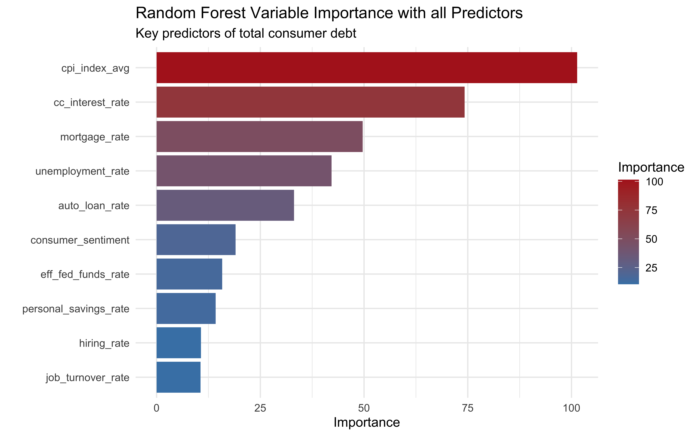
Random Forest Model Construction with Best Subset Selection
Here we have a random forest model using the predictors from best subset selection. This model performs marginally better than the simple linear regression model, but worse than the random forest model with all predictors included. It fails to outperform the multiple linear regression model.
| .metric | .estimator | mean | n | std_err | .config |
|---|---|---|---|---|---|
| rmse | standard | 0.7244483 | 10 | 0.1445600 | pre0_mod0_post0 |
| rsq | standard | 0.9144474 | 10 | 0.0416959 | pre0_mod0_post0 |
The order of importance here is similar to that of the above model with all predictors included.
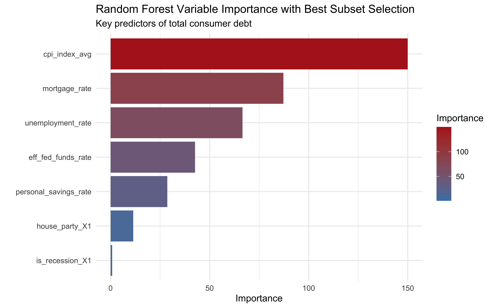
Random Forest Model Construction with LASSO method
Here we see the random forest model with predictors from the LASSO method. This performed worse than all of the other models. This doesn’t necessarily suggest that the predictors we used here are not useful, but may just indicate the random forest model is not a good fit for estimating the observed data and a less complex model would be best for estimating total consumer debt.
| .metric | .estimator | mean | n | std_err | .config |
|---|---|---|---|---|---|
| rmse | standard | 0.8866642 | 10 | 0.1538021 | pre0_mod0_post0 |
| rsq | standard | 0.8648089 | 10 | 0.0801525 | pre0_mod0_post0 |
The change in importance here is only a result of the exclusion of predictors. Average CPI and interest rates remain the most important here.
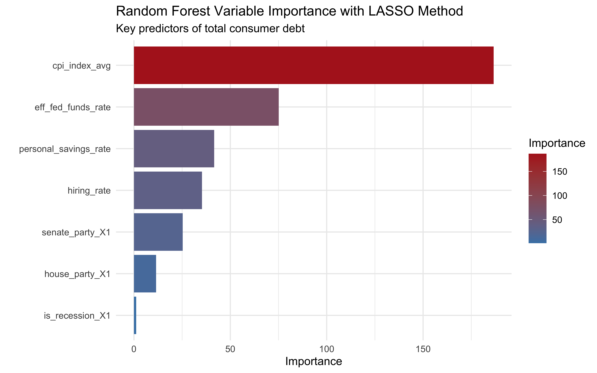
Model Performance Assessment
In this section, I reassess the three previously constructed models using 10-fold cross-validation. This provides a more robust estimate of how the models will perform on unseen data compared to the single validation split used in previous assignments. The multiple linear regression model outperforms the simple linear regression and the random forest model. The combination of predictors from the best subset selection used in multiple linear regression have high accuracy in predicting consumer debt.
| model | mean | std_err |
|---|---|---|
| Multiple Linear Regression | 0.4107650 | 0.0503254 |
| LASSO MLR | 0.4393065 | 0.0542062 |
| Random Forest | 0.6682052 | 0.1474410 |
| Best Subset Random Forest | 0.7244483 | 0.1445600 |
| Simple Linear Regression | 0.7371998 | 0.1030179 |
| Lasso RF | 0.8866642 | 0.1538021 |
Model Interpretation and Inference
The multiple linear regression model with predictors from best subset selection outperforms all other models, having the lowest prediction error. The multiple linear regression model with predictors from the LASSO method is a close second, followed by the random forest model with all predictors. Random forest models typically perform well, but the limited size of the data set may have impacted performance. It could also suggest that less complex models are better equipped in predicting total debt with the provided predictors. The random forest model with predictors from the LASSO method performed the worst out of all models. The complexity of this model may have contributed to its poor performance.
Conclusion
I’d like to point out that after extensively testing and training my models here, that unseen events could have a substantial impact on consumer debt levels that cannot be explained by my models here. Such events could include the current situation with oil supply constraints, which could lead to a cascading set of negative events that could lead to either a substantial rise in debt, or lead to delinquencies and defaults lowering the debt, but erasing capital throughout the economy. An issue I would like to point out with my model is the way the data is split for training and testing. In hindsight, I should have used the most recent data for testing and past data for training, which would have made for a more reliable model in terms of predictive power. Random splitting is standard for general regression, but time-series splitting (back testing) is preferred for economic forecasting to avoid ‘look-ahead bias’. The proportion of data I used for training from the data set is 60%, which I believe to be a appropriate amount considering the size of the data set.
References
James, Gareth; Witten, Daniela; Hastie, Trevor; Tibshirani, Robert. “An Introduction to Statistical Learning: with Applications in R” (Springer Texts in Statistics)